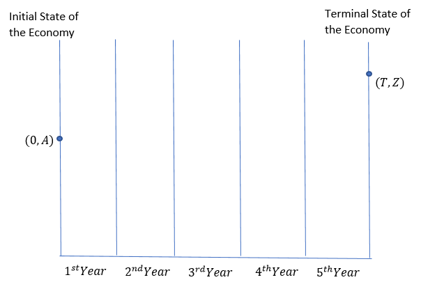
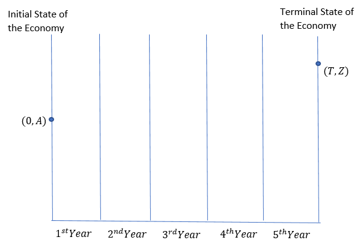
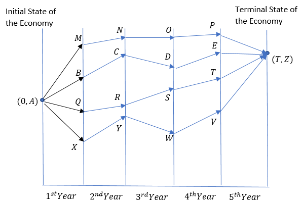
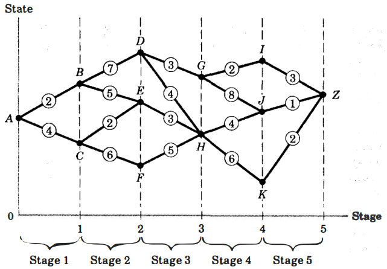
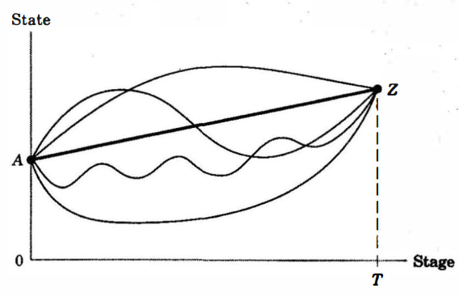
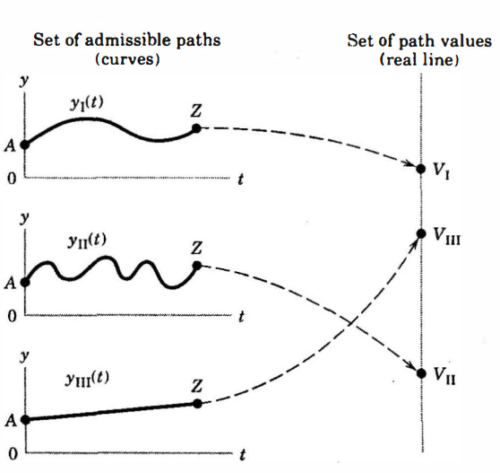
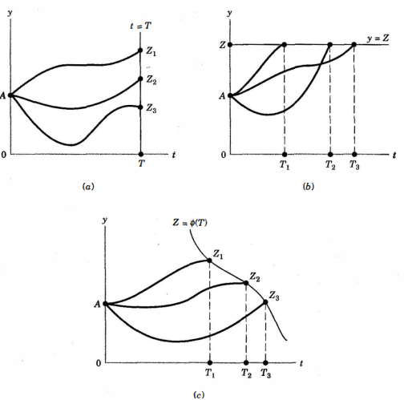

\[\begin{align} \text{max }u &= u(X,Y)\\ \text{s.t. } P_x.X + P_y.Y &= I\\ \text{where; }X \ \text{and}\ Y&: \text{are goods}\\ I &: \text{income}\\ X^* \ , \ Y^*&: \text{Solution to the optimization problem} \\ &\quad\text{at a specific time period} \end{align}\]





A function maps elements from one set (the domain) to another set (the codomain). For example, \(f(x) = x²\) maps real numbers to real numbers.
A functional, on the other hand, is a special type of function that takes another function as its input and returns a number (or more generally, a scalar value) as its output. In other words, a functional is a “function of functions.”
Functionals are particularly important when finding the shortest path between two points on a surface, we’re actually minimizing a functional that takes a path (which is a function) as input and returns its length as output.
A key distinction is that functions operate on points (numbers, vectors, etc.), while functionals operate on entire functions. This makes functionals particularly useful in:

Let us assume we have an asset/resource stock from which we want to derive 2 types of benefits:
Our objective is to maximize the total benefit (flow + scrap value) from the resource.
Let us denote
\(V\) : flow benefit
\(F\) : the scrap value
\(\therefore\) Our objective is to
\[\begin{equation} \text{max}_{[y(t)]} \ \int_0^T[V(y(t), X(t), t)]dt + F(X(T)) \\ \end{equation}\]
\[\begin{align} \text{s.t.}\ \frac{d X(t)}{d t} = \dot{X}(t) &= f(y(t), X(t)) \ \to \text{equation of motion}\\ & \qquad \qquad \qquad \qquad \text{or dynamic constraint}\\ X(0) &= a \ \to \text{constant} \end{align}\]
where; \[\begin{align} F(X(T)) &: \text{scrap value which is realised at the end of the time i.e. T.}\\ y(t) &: \text{decision variable or control variable (e.g. rate of extraction)}\\ X(t) &: \text{state variable i.e. stock of resource at time t.}\\ T &:\text{point of time when scrap value is realised.}\\ t &: \text{continuous time} \end{align}\]
To maximise the objective functional we will set a Lagrangian function:
\[\begin{align} L &= \int_0^T[V(\cdot) + \lambda(t)\{f(\cdot) - \dot{X}(t)\}]dt + F(X(T))\\ &= \int_0^T[V(\cdot) + \lambda(t)f(\cdot) - \lambda(t)\dot{X}(t)]dt + F(X(T)) \ \dots (1) \end{align}\]
Consider;
\[\begin{align} -\int_0^T \lambda(t)\ \dot{X}(t)dt \end{align}\]
The standard integration by parts formula is:
\[\begin{equation} \int u \frac{dv}{dt} dt = u \cdot v - \int v \frac{du}{dt} dt \end{equation}\]
Let \(u = \lambda(t)\)
Let \(dv = \dot{X}(t)dt\)
\(\frac{du}{dt} = \dot{\lambda}(t)\)
\(v = X(t)\)
\[\begin{align} -\int_0^T \lambda(t)\ \dot{X}(t)dt &= -[\lambda(t)X(t)]_0^T + \int_0^T X(t)\dot{\lambda}(t)dt \\ &= -\lambda(T)X(T) + \lambda(0)X(0) + \int_0^T X(t)\dot{\lambda}(t)dt\\ \end{align}\]
\[\begin{align} \therefore -\int_0^T \lambda(t)\ \dot{X}(t)dt &= -[\lambda(t)X(t)]_0^T + \int_0^T X(t)\dot{\lambda}(t)dt \\ &= -\lambda(T)X(T) + \lambda(0)X(0) + \int_0^T X(t)\dot{\lambda}(t)dt \ \dots (2) \end{align}\]
Recall;
\[\begin{align} L &= \int_0^T[V(\cdot) + \lambda(t)f(\cdot) - \lambda(t)\dot{X}(t)]dt + F(X(T))\ \dots (1) \end{align}\]
Substituting the result from equation (2):
\[\begin{align} L &= \int_0^T[V(\cdot) + \lambda(t)f(\cdot)]dt - \lambda(T)X(T) + \lambda(0)X(0) + \int_0^T X(t)\dot{\lambda}(t)dt + F(X(T)) \ \dots (3) \end{align}\]
Let us define
\[\begin{align} H &= V(\cdot) + \lambda(t)f(\cdot) \\ \implies H &= H(y(t), X(t), \lambda(t), t) \end{align}\]
\[\begin{align} \therefore L &= \int_0^T[H(\cdot)]dt - \lambda(T)X(T) + \lambda(0)X(0) + \int_0^T X(t)\dot{\lambda}(t)dt + F(X(T)) \\ &= \int_0^T[H(\cdot)]dt + \int_0^T X(t)\dot{\lambda}(t)dt + F(X(T)- \lambda(T)X(T) + \lambda(0)X(0)) \\ &= \int_0^T\left[H(\cdot) + X(t)\dot{\lambda}(t)\right]dt + F(X(T)- \lambda(T)X(T) + \lambda(0)X(0)) \end{align}\]
We want to optimize \(L\) by chosing \(y(t)\) the control variable.
Let us assume \(y(t)\) is changed to \(y(t) + \Delta y(t)\)
\(\{y(t) \to y(t) + \Delta y(t)\}\): Change in the rate of extraction.
\(\{X(t) \to X(t) + \Delta X(t)\}\): Change in the stock of resources.
The given functional is:
\[ L = \int_0^T\left[H(\cdot) + X(t)\dot{\lambda}(t)\right]dt + F(X(T)- \lambda(T)X(T) + \lambda(0)X(0)) \]
where:
The Hamiltonian is named after William Rowan Hamilton, who developed Hamiltonian mechanics in the 19th century. Originally, it was used in classical mechanics to describe the total energy of a system:
\[ H(q, p, t) = T + V \]
where:
The total variation of \(L\) comes from two parts:
Since \(L\) is an integral, its variation follows:
\[ \Delta L = \int_0^T \Delta \left[ H(\cdot) + X(t)\dot{\lambda}(t) \right] dt + \Delta F(\cdot) \]
Expanding \(\Delta H(\cdot)\) using the first-order Taylor expansion:
\[ \Delta H(\cdot) = \frac{\partial H}{\partial y(t)} \Delta y(t) + \frac{\partial H}{\partial X(t)} \Delta X(t) \]
Also, the variation of \(X(t) \dot{\lambda}(t)\) gives:
\[ \Delta (X(t) \dot{\lambda}(t)) = \dot{\lambda}(t) \Delta X(t) \]
\[ \implies \int_0^T \left[ \frac{\partial H}{\partial y(t)} \Delta y(t) + \frac{\partial H}{\partial X(t)} \Delta X(t) + \dot{\lambda}(t) \Delta X(t) \right] dt \]
The function \(F(X(T)- \lambda(T)X(T) + \lambda(0)X(0))\) depends on \(X(T)\), \(\lambda(T)\), and \(X(0)\). Its total variation is:
\[ \Delta F = \frac{\partial F}{\partial X(T)} \Delta X(T) - \lambda(T) \Delta X(T) + \lambda(0) \frac{\partial X(0)}{\partial X(T)} \Delta X(T) \]
Since \(X(0)\) is constant, its derivative with respect to \(X(T)\) is:
\[ \frac{\partial X(0)}{\partial X(T)} = 0 \]
which simplifies the terminal term to:
\[ \frac{\partial F}{\partial X(T)} \Delta X(T) - \lambda(T) \Delta X(T) \]
Now, combining everything:
\[ \Delta L = \int_0^T\left[ \frac{\partial H}{\partial y(t)}\Delta y(t) + \frac{\partial H}{\partial X(t)}\Delta X(t) + \dot{\lambda}(t) \Delta X(t) \right]dt + \frac{\partial F}{\partial X(T)}\Delta X(T) - \lambda(T)\Delta X(T) \]
For optimization \(\Delta L = 0\), we analyze:
\[\Delta L = \int_0^T\left[ \frac{\partial H}{\partial y(t)}\Delta y(t) + \frac{\partial H}{\partial X(t)}\Delta X(t) + \dot{\lambda}(t) \Delta X(t) \right]dt + \frac{\partial F}{\partial X(T)}\Delta X(T) - \lambda(T)\Delta X(T)\]
Rearranging;
\[\Delta L = \int_0^T\left[ \frac{\partial H}{\partial y(t)}\Delta y(t) + \left(\frac{\partial H}{\partial X(t)} + \dot{\lambda}(t)\right)\Delta X(t) \right]dt + \left(\frac{\partial F}{\partial X(T)} - \lambda(T)\right)\Delta X(T)\]
Since \(\Delta L = 0\) must hold for any small variations \(\Delta X(t)\) and \(\Delta y(t)\), each coefficient must be zero.
Since \(\Delta y(t)\) is arbitrary, we must have:
\[\frac{\partial H}{\partial y(t)} = 0\]
This is the control optimality condition, ensuring that the Hamiltonian is optimized with respect to the control \(y(t)\).
From the integral term:
\[\left[\frac{\partial H}{\partial X(t)} + \dot{\lambda}(t)\right] \Delta X(t)\]
For arbitrary \(\Delta X(t)\), we get:
\[\dot{\lambda}(t) = -\frac{\partial H}{\partial X(t)}\]
This is the co-state equation, governing the evolution of the costate \(\lambda(t)\).
From the terminal variation term:
\[\left[\frac{\partial F}{\partial X(T)} - \lambda(T)\right] \Delta X(T)\]
For arbitrary \(\Delta X(T)\), we get:
\[\lambda(T) = \frac{\partial F}{\partial X(T)}\]
This is setting the final value of the costate.
To satisfy \(\Delta L = 0\):
Control Optimality Condition
\[\frac{\partial H}{\partial y(t)} = 0\]
Co-state Equation
\[\dot{\lambda}(t) = -\frac{\partial H}{\partial X(t)}\]
Terminal Condition
\[\lambda(T) = \frac{\partial F}{\partial X(T)}\]
These are the necessary conditions from Pontryagin’s Maximum Principle.
\[\frac{\partial H}{\partial y(t)}=0\]
\[\dot{\lambda}(t)=-\frac{\partial H}{\partial X(t)}\]
\[\lambda(T)=\frac{\partial F}{\partial X(T)}\]